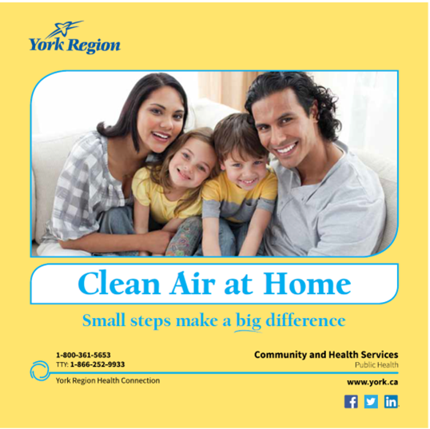
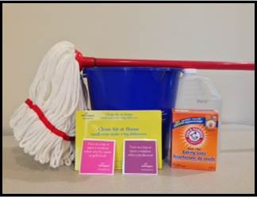

Clean Air at Home
"Clean Air at Home: Small Steps Make a Big Difference" is a targeted, community-based social marketing campaign that reduces young families’ exposures to environmental contaminants at home such as mould, dust, fumes from toxic cleaners and tobacco smoke. Almost three in four participants changed some of their behaviors and almost one half reported performing all five of the behaviors being promoted.
Background
Note: To minimize site maintenance costs, all case studies on this site are written in the past tense, even if they are ongoing.
York Region’s Public Health and Housing Services Branches partnered to pilot Clean Air at Home: Small Steps Make a Big Difference. The campaign used an interpersonal approach that challenged tenants from social housing complexes to take five steps over five weeks to clean the air at home for their children’s health. Tenants, public health and housing partners participated in campaign planning and implementation to increase buy-in and trust.
The strong partnership between York Region’s Public Health and Housing Services Branches facilitated direct access to low-income residents living at social housing sites and helped both partners work towards shared objectives around community engagement.
The Regional Municipality of York is part of the Greater Toronto Area in Ontario, Canada.
Setting Objectives
Goal: To reduce exposure to indoor air contaminants among children from birth to six years old from low-income families.
Objectives:
- Engage at least 30 per cent of target audience with campaign
- Increase knowledge about the five promoted steps (5-Steps) to clean air at home in 60 per cent of target audience
- Increase confidence to take the 5- Steps to clean air at home in 60 per cent of target audience
- Increase the rate of behaviours related to the 5-Steps in 40 per cent of target audience
- Engage 10 tenants and partners to participate in community activities viewed as fulfilling and effective at advancing campaign outcomes
Getting Informed
Extensive epidemiological and other research concerning the burden of illness related to environmental exposures, the populations at highest risk, and the environmental contaminants of most concern guided decisions around campaign need, key messages and target audience.
This research identified a need to target parents of children from birth to six years of age from low-income families, and to promote actions that reduced exposure to mould, dust, toxic cleaners and tobacco smoke. An environmental scan revealed a lack of similar messages tailored specifically for this target group.
York Region Public Health conducted an analysis of the target audience to assess demographics, current knowledge, attitudes, behaviours and barriers related to protecting against environmental exposures. Psychographic characteristics and health literacy were also assessed through a literature search and a series of focus groups.
Some of the key findings that shaped program development are outlined below.
- 2.7 per cent of York Region residents were low-income. Immigrants made up the highest proportion of the low-income population
- Knowledge/concern about environmental exposures did not necessarily lead to the use of protective barriers
- Involving organizations that served this population could increase buy-in and trust
- Barriers to action included low-risk perception, lack of time and a perceived lack of control over exposure – including the perception that protecting children from environmental contaminants is too overwhelming a task
- Low socio-economic status (SES) was inversely related to health, and was associated with lower health consciousness, health literacy and information-seeking behaviour
- People with low SES sought health information through passive communication channels and spent most of their free time at home
- People with low SES often have limited free time, lack access to transportation and childcare assistance, and lack access to services
Researchers also investigated strategies that would best reach low-income families. Some of the key findings are outlined below.
- Make use of existing groups/events in their community that are easy for residents to access
- Use interactive, experiential and mixed learning tools that are simple and straightforward
- Provide easy opportunities to practice the behaviour change and reward participation
- Involve organizations that serve this population to increase buy-in and trust
These insights helped develop the campaign’s strategy and tactics, key messages and branding. York Region Public Health then tested these findings in focus groups with the target audience and housing partners.
The Clean Air at Home campaign was strategically designed to meet the unique needs of its target audience based on two health behaviour theories - Community Organization Theory and the Community – based Social Marketing Theory - that support community engagement. The campaign used a combination of social marketing and community engagement tactics and invited Housing Services partners and tenants to collaborate with Public Health in campaign development and rollout.
Delivering the Program
Partnerships and Collaboration
York Region Public Health partnered with York Region Housing Services to allow direct campaign implementation at the target audience’s home – the social housing complexes in York Region. This reduced access and transportation barriers to participation and allowed for delivery of interpersonal and community-based campaign tactics. On-site York Region staff also helped build trust with tenants.
Strategy, Branding and Key Messages
A campaign tagline - Small steps make a big difference - was carefully designed to focus on simplicity, reduce perceived barriers and counter the prevailing perception that the task of protecting children from environmental contaminants is too overwhelming. (Vivid, Personalized, Credible, Empowering Communication)
The campaign centered on a 5-Step Clean Air at Home Challenge that invited tenants to take five small, low-cost steps over a five-week period to clean their air at home:
Step 1: Turn on a fan or open a window when you shower
Step 2: Clean the floor with a damp mop or cloth
Step 3: Turn on a fan or open a window when you fry, sauté or grill food
Step 4: Use non-toxic cleaning products more often
Step 5: Make your home smoke-free
Tactics
Social Marketing Tactics
By promoting a series of manageable steps, the campaign boosted confidence and made it easier to adopt the promoted behaviours. (Building Motivation and Engagement Over Time)
In addition, the campaign used the following tactics to maximize successful tenant completion of the 5-Step Challenge.
Tenants were:
- Given a guidebook that provided information about why clean air at home is important to children’s health and steps on how to clean the air

Guidebook
- Given an invitation to take the 5-Step challenge and instructions on setting weekly goals to participate (Goal-setting / Obtaining a Commitment)
- Given a free toolkit with tools needed to complete the challenge. These tools included a mop, bucket, vinegar, baking soda, magnet and lemon. Two decals were also included to prompt turning on a fan or opening a window – when showering and when frying, sautéing or grilling food

TOOLKIT: Mop, bucket, vinegar, baking soda, magnet, decal as reminders to turn on a fan/open window.
- Given incentives/rewards to participate – a chance to win one of three $50 grocery gift cards, in addition to getting the free toolkit (Incentives)
- Given weekly reminders and prompts throughout the 5-Step Challenge. Banners were put up around housing complexes and door hangers were placed on tenants’ door knobs to remind them what step of the Challenge to take each week. These public reminders helped to socially normalize the Challenge in the community (Prompts)
.png)
.png)
Door hanger for step 4

Roll-up banner for step 4
- Invited to make a public pledge to take the Challenge to build additional resolve. During a community event, tenants were invited to add their signed post-it notes, shaped as a hand, to a pledge board display. This signified their pledge to take the 5-Step Challenge starting the next day. (Norm Appeals, Obtaining a Commitment, Word-of-Mouth)

Pledge board
Community Engagement Tactics
The campaign also incorporated tactics from Community Organization Theory to meet the target audience’s learning needs and increase their buy-in and trust. As such, the campaign provided tenants with opportunities to engage with one another and get involved in campaign design and delivery.
- Community Champions (Champions): Fifteen tenants met with York Region Public Health staff on a regular basis to plan, deliver, promote and offer feedback on the 5-Step Challenge at their housing complexes. These Champions benefited with an opportunity to learn new skills –meeting facilitation, event planning and team building – and a certificate of recognition signed by York Region’s Medical Officer of Health and by the Commissioner of the Community and Health Services Department. (Block Leaders / Neighbourhood Coaches)
- 5-Step Challenge Kick-off Community Event: Tenants were invited to an on-site community event to interact with neighbours and Public Health and Housing Services Branch staff, enjoy a BBQ and participate in family-fun activity stations that promoted the Challenge’s 5-Steps in a fun, experiential way. (Vivid, Personalized, Empowering Communication; Word of Mouth)
Financing the Program
York Region Public Health primarily financed the campaign with additional funds provided by York Region Housing Services.
Amounts are expressed per 100 housing units.
Social marketing tactics: $6,720
- Toolkit
- Guidebook
- Incentives – grocery gift cards
- Printing – challenge invitation, recruitment postcards, etc.
- Reminders – door hangers
- Prompts – banners (one-time cost)
Community engagement tactics: $4,800
- Food for community event
- Printing – postcards (invitation to event), activity game passport
- Miscellaneous – activity prizes
- Banners (one-time cost)
- Activity games (one-time cost) ~ additional $5,500
- Community Champions – cost of refreshments for meetings
Evaluation: $1,050
- Incentives ($10 grocery gift cards per housing unit)
- Postcards – upcoming surveys
Staff FTEs and Overtime
- Staff time – 2 FTEs
- Overtime (2 staff to facilitate community champion meetings held after business hours; Volunteers for community event; Staff to facilitate evaluation surveys after business hours;
Measuring Achievements
York Region Public Health conducted a door-to-door survey of tenants approximately five weeks after campaign implementation. The post-intervention evaluation survey was used to measure campaign outcomes and obtain feedback on individual campaign tactics. Residents were provided advanced notice of the door-to-door survey based on recommendations from property managers to make residents more comfortable opening their doors.
In order to achieve the best response rate possible, Public Health staff knocked on tenants’ doors at different times throughout the day and during different days of the week. Regardless of whether or not tenants completed surveys, and as a token of appreciation for their time, tenants were given a $10 grocery gift card prior to completing the survey. This increased the likelihood that tenants would complete the survey.
Surveys were delivered and picked up by Public Health staff to reduce the burden for respondents. This provided the added benefit of face-to-face help in completing the survey, especially in the case of language barriers.
In addition to the quantitative survey evaluation, interviews were conducted with Housing Services and Community Champions. The partner interviews provided feedback on the campaign and on future resourcing, development and partnership opportunities. The Community Champion interviews provided feedback on community engagement tactics and the future potential of using the Community Champion structure.
While the campaign pilot offered valuable insights, staff resources and sample size limited the rigour of evaluation methods.
Results
Note: To test the value of various social marketing and community engagement tactics, four different campaign models were piloted in 2014 to 2015 at five different social housing complexes in municipalities with high prevalence rates of low-income residents. Each of the four models built on the last; offering tenants progressively more tactics to participate in the 5-step Challenge. The responses from Model 4 resulted in the best evaluation results and therefore, have been used as the example in this case study.
Of the 285 total housing units, a total of 218 tenants opened their door (76%). Out of 218 tenants who opened their door, 123 (43%) surveys were completed. The tenants had to report that they read the printed material and/or attended the community event in order to meet the screening criteria. The remaining 95 tenants (out of 218) were either not interested in filling out the survey or did not meet the screening criteria.
Fifteen tenants (five above the target of “at least 10”) were recruited as Community Champions for the campaign.
The campaign exceeded all target outcomes:
|
Objective
|
Target
|
Result
|
|
↑ Knowledge: How to clean the air at home
|
60%
|
90%
|
|
↑ Confidence: How to clean the air at home
|
60%
|
95%
|
|
↑ Behaviours: Performed at least one of the 5-Steps more often
|
40%
|
72%
|
|
↑ Behaviours: Performed each of the 5-Steps more often
|
40%
|
45%
|
In interviews, the Community Champions said they were able to leverage their existing relationships with neighbours which helped to motivate additional tenants to participate in the Challenge. Community Champions were able to promote and gain interest in the Challenge by meeting with neighbours while distributing campaign items. They provided valuable insight into best methods for catering the campaign to each specific community.
Partners and Community Champions reported that their community activities were fulfilling and had an impact on campaign outcomes, and all Champions expressed an interest in completing similar work again in the future.
Contacts
Vittoria Vecchiarelli
Senior Public Health Inspector
Health Protection Division,
Community and Health Services Department
The Regional Municipality of York
1-877-464-9675 ext. 74556
Vittoria.Vecchiarelli@york.ca
Stephanie Zeoli
Health Educator Health Protection Division,
Community & Health Services Department
The Regional Municipality of York
1-877-464-9675 ext. 74684
Stephanie.Zeoli@york.ca
Notes
Lessons Learned
The initial campaign pilot employed limited social marketing tactics and no community engagement. Tenants at this social housing complex only received education through the Guidebook, a goal-setting opportunity (invitation to participate in the 5-Step Challenge) and incentives (one in three chances to win a grocery gift card). This was done through a generic mail drop and only resulted in a four per cent response rate.
Additional social marketing and community engagement tactics were added at the next social housing complex pilot to solicit additional tenant engagement. The campaign strategy was presented to all partners’ senior management for feedback and approval. Ongoing consultation with the partners’ management and with Community Champions guided all campaign decisions. While valuable, this client-centred approach also presented challenges. It required plans, timelines and resources to be fluid enough to accommodate new ideas that arose from stakeholders throughout the planning cycle. It also required York Region staff to work outside regular hours on occasion to accommodate tenant schedules.
The logistics of delivering an interpersonal, community-based campaign was also challenging. Coordinating and delivering campaign tactics and evaluation surveys, hosting numerous meetings and a large community event over an intensive 9.25 month period required more staff time than expected.
Furthermore, when engaging with social housing tenants, staff had to be sensitive to many barriers around mental health, mobility and work abilities. As such, York Region Public Health consulted with Housing Services on best ways to work with this population and how to remain sensitive to their barriers.